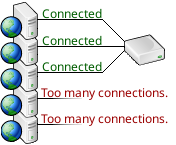
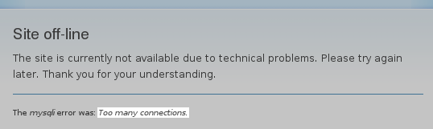

Throttling limits the number of connections to a given database and queues clients rather than denying them access outright. This can prevent database overload, maximize the value of a per-connection licensing scheme, and prevent an app from monopolizing the database
An app has been in production for a long time, its popularity has grown, and one day it finally gets enough traffic for a burst of activity to try to open more connections than the database can handle.

The app wasn't written to manage that particular error, though, so it just failed and printed the error out on the web page.

It's likely that the database has been well tuned, the app only gets busy enough to overload it under certain circumstances, and it would be ideal if the app could be throttled back.
SQL Relay can be configured to maintain a certain number of database connections and open more, on-demand, up to a point. If the app is so busy that it needs more connections than the maximum number configured, clients will be queued, rather than rejected.
Queued clients consume few system resources and may be configured to wait for a while before giving up, or wait indefinitely.
Throttling is especially helpful when migrating from an in-house database to a cloud-service database with a per-connection licensing scheme. Your in-house database may have allowed any number of connections, but you may only be able to afford a certain number of connections to the cloud.
FIXME: image here...
SQL Relay can be configured to open the exact number of connections that you paid for and funnel all of your database traffic through them. If you paid for 50 connections, but every now and then you get a burst of traffic and 60 clients need to connect, 10 of them will be queued rather than rejected.
FIXME: image here...
Multiple applications often use the same database. Under the right set of circumstances, a lower priority app can monopolize the database with a large number of client sessions or with long-running queries.
FIXME: image here...
In some cases, this can be managed by dedicating a database user to each application and placing quotas on the users. But not all databases support user quotas, and applications must often share database users.
FIXME: image here...
SQL Relay can be used to manage this problem. Multiple instances of SQL Relay can be created, each instance can be dedicated to a set of apps, and the instances dedicated to lower priority apps can be configured to maintain a limited number of database connections.
As a result, the number of simultaneous client sessions that the lower priority apps are able to maintain are also limited.